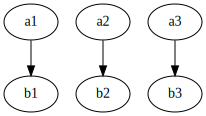
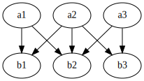

Content from Getting Started
Last updated on 2025-02-09 | Edit this page
Overview
Questions
- Why should I use Julia?
- How do I get started with Julia?
Objectives
- Start a REPL
- Run lines from VS Code
Why Julia
Most of the participants will be coming from Python, MATLAB or a lower level language like C/C++ or Fortran. Why should you be interested in learning Julia?
Performance and usability
Julia promises:
- Native performance: close to or sometimes even exceeding C++ or Fortran.
- Solve the multiple language issue: one language for everything (including GPU).
- As easy to get into as Python or R.
- Designed for parallel computing.
These promises seem tantalizing and are in part what draws people to Julia, but in practice getting into Julia and writing performant code are two different things. Julia has its own idiosyncrasies that need to be understood to really squeeze every erg of performance out of your system.
Julia obtains its performance from being a just-in-time (JIT) compiler, on top of the LLVM compiler stack (similar to how Python’s Numba operates).
Language intrinsics
Next to being performant, it turns out that Julia is a very nice language that does some things a bit different from what you may be used to:
- First-class arrays and Broadcasting: arrays, slicing and operating on arrays have dedicated syntax, similar to MATLAB.
- Multiple dispatch: Julia functions can be specialized on the entire call signature (not just its first argument like in Object Oriented Programming).
- Macros and Meta-programming: The just-in-time nature of the Julia compiler exposes a wide range of meta-programming capabilities, ranging from small macros to enhance the expressibility of the language to full-on code generation.
Meta-programming, while very powerful, is also very easy to abuse, often leading to unreadable non-idiomatic code. So tread with care! We’ll see some examples where macros are indispensable though, and the SciML stack relies deeply on on-the-fly code-generation.
Discussion
Why are you interested in Julia? What is your current go-to for efficient computing?
Recommended materials
If you want to learn more about computer programming in general, a great place to start is Structure and Interpretation of Computer Programs, including the Lectures on Youtube. These are old but wonderful and really teach some wisdom around designing complex software systems. Also, this might cure any latent adiction to object oriented programming.
If you want to learn about efficient programming in Julia, check out Parallel Computing and Scientific Machine Learning. These go in much more detail than we can do in this lecture.
The materials in this lesson are aimed somewhere in between SICP and PCSML. We’ll look at real scientific examples to dive into computational concepts.
Running Julia
When working in Julia it is very common to do so from the REPL (Read-Eval-Print Loop). Please open the Julia REPL on your system
$ juliaOUTPUT
_
_ _ _(_)_ | Documentation: https://docs.julialang.org
(_) | (_) (_) |
_ _ _| |_ __ _ | Type "?" for help, "]?" for Pkg help.
| | | | | | |/ _` | |
| | |_| | | | (_| | | Version 1.10.3 (2024-04-30)
_/ |\__'_|_|_|\__'_| | Official https://julialang.org/ release
|__/ |
julia>The REPL needs a small introduction since it has several modes.
| Key | Prompt | Mode |
|---|---|---|
| None | julia> |
Standard Julia input. |
] |
pkg> |
Pkg mode. Commands entered here are functions in
the Pkg module. |
; |
shell> |
Shell mode. |
? |
help?> |
Help mode. Type the name of any entity to look up its documentation. |
To switch back to the standard Julia input from another mode, press
Ctrl+C
Play with the REPL (5min)
-
Pkgmode has ahelpcommand to help you along. Find out what theaddcommand does. - Check the contents of the folder in which you are running your REPL
(
lson Unix,diron Windows). - Find out what the
printmethod does in Julia.
-
]help add, theaddcommand installs packages ;ls?print
Callout
Please take a look at the Julia documentation now at https://docs.julialang.org/en/v1/.
Pluto
Pluto is the notebook environment from which we will teach much of this workshop. We can run it from the Julia REPL.
OUTPUT
pkg> add Pluto
... quite a bit of output ...
julia> using Pluto
julia> Pluto.run()
[ Info: Loading...
┌ Info:
└ Opening http://localhost:1235/?secret=xyzxyzxyz in your default browser... ~ have fun!
┌ Info:
│ Press Ctrl+C in this terminal to stop Pluto
└VS Code
VS Code is the editor for which Julia has the best support. We’ll be
needing to run Julia in multiple threads later on, so we’ll set some
arguments for the REPL in settings.json (press
Ctrl+Shift+P and search for
Open User Settings (JSON)).
Now when you start a new REPL (Ctrl+Shift+P, search
“Julia REPL”), you can query the number of threads available:
Julia as a calculator (5min)
Try to play around in the VS Code REPL to use Julia as a calculator.
- What do you find is the operator for exponentiation?
- How do you assign a variable?
- What happens when you divide any two integers? Use the
typeoffunction to inspect the type of the result. Can you figure out how to integer division (search the documentation!)? - What happens in Pluto when you change a variable that is depended upon?
- In Julia exponentiation is
^. - Just like you’re used to
x = 3. - The
/operator always returns a floating point value. To get to integer division, we want the÷operator, which can be typed using\divand then press TAB. Or you can use the equivalentdivfunction. - Pluto updates all dependent computations automatically. This is known as a reactive notebook.
Key Points
- In Julia, the REPL is much more important than in some other languages.
- Pluto is a reactive environment
- VS Code has the best editor integration for Julia
Activate the Workshop Environment
For this workshop, we prepared an environment. Press ]
in the REPL to activate Pkg mode. Make sure that you are in
the path where you prepared your environment (see Setup
Instructions).
(v1.11) pkg> activate .
(EfficientJulia) pkg>Alternatively, check the little “Julia env” message at the bottom of VS Code, and make sure that the correct environment is there.
You should now be able to generate a plot using GLMakie
(that one dependency that made you wait)
JULIA
using GLMakie
x = -3.0:0.1:3.0
z = sinc.(sqrt.(x.^2 .+ x'.^2))
surface(x, x, z, alpha=0.5)
wireframe!(x, x, z, color=:black, linewidth=0.5)To create the above figure:
JULIA
#| classes: ["task"]
#| creates: episodes/fig/getting-started-makie.png
#| collect: figures
module Script
using GLMakie
function main()
x = -3.0:0.1:3.0
z = sinc.(sqrt.(x.^2 .+ x'.^2))
fig = Figure(size=(1024, 768))
ax = Axis3(fig[1,1])
surface!(ax, x, x, z, alpha=0.5)
wireframe!(ax, x, x, z, color=:black, linewidth=0.5)
save("episodes/fig/getting-started-makie.png", fig)
end
end
Script.main()Content from Introduction to Julia
Last updated on 2025-02-09 | Edit this page
Overview
Questions
- How do I write elementary programs in Julia?
- What are the differences with Python/MATLAB/R?
Objectives
- functions
- loops
- conditionals
- scoping
Unfortunately, it lies outside the scope of this workshop to give an introduction to the full Julia language. Instead, we’ll briefly show the basic syntax, and then focus on some key differences with other popular languages.
About Julia
These are some words that we will write down: never forget.
- A just-in-time compiled, dynamically typed language
- multiple dispatch
- expression based syntax
- rich macro system
Oddities for Pythonistas:
- 1-based indexing
- lexical scoping
Better well stolen … Always ask when learning a new language: what are the primitives, the means of combination and the means of abstraction. Many languages are very similar in these regards, so we’ll look at things that are different:
| What | Procedures | Data |
|---|---|---|
| primitives | standard library | (numbers, strings, etc.) arrays, symbols, channels |
| means of combination | (for, if etc.) broadcasting,
do
|
tuples, struct, expressions |
| means of abstraction | functions, dispatch, macros (no classes!) |
abstract type, generics |
Eval
How is Julia evaluated? Types only instantiate at run-time, triggering the compile time specialization of untyped functions.
- Julia can be “easy”, because the user doesn’t have to tinker with types.
- Julia can be “fast”, as soon as the compiler knows all the types.
When a function is called with a hitherto new type signature, compilation is triggered. Julia’s biggest means of abstraction: multiple dispatch is only an emergent property of this evaluation strategy.
Julia has a heritage from functional programming languages (nowadays well hidden not to scare people). What we get from this:
- expression based syntax: everything is an expression, meaning it reduces to a value
- a rich macro system: we can extend the language itself to suit our needs (not covered in this workshop)
Julia is designed to replace MATLAB:
- high degree of built-in support for multi-dimensional arrays and linear algebra
- ecosystem of libraries around numeric modelling
Julia is designed to replace Fortran:
- high performance
- accelerate using
Threadsor through the GPU interfaces - scalable through
DistributedorMPI
Julia is designed to replace Conda:
- quality package system with pre-compiled binary libraries for system dependencies
- highly reproducible
- easy to use on HPC facilities
Julia is not (some people might get angry for this):
- a suitable scripting language
- a systems programming language like C or Rust (imagine waiting for
lsto compile every time you run it) - replacing either C or Python anytime soon
Functions
Functions are declared with the function keyword. The
block or function body is ended with
end. All blocks in Julia end with end.
Let’s compute the force between Earth and Moon, given the following constants:
JULIA
const EARTH_MASS = 5.97219e24
const LUNAR_MASS = 7.34767e22
const LUNAR_DISTANCE = 384_400_000.0OUTPUT
1.982084770423259e20There is a shorter syntax for functions that is useful for one-liners:
Anonymous functions (or lambdas)
Julia inherits a lot of concepts from functional programming. There are two ways to define anonymous functions:
And a shorter syntax,
Higher order functions
Use the map function in combination with an anonymous
function to compute the squares of the first ten integers (use
1:10 to create that range).
If statements, for loops
Here’s another function that’s a little more involved.
JULIA
function is_prime(x)
if x < 2
return false
end
for i = 2:isqrt(x)
if x % i == 0
return false
end
end
return true
endRanges
The for loop iterates over the range
2:isqrt(x). We’ll see that Julia indexes sequences starting
at integer value 1. This usually implies that ranges are
given inclusive on both ends: for example, collect(3:6)
evaluates to [3, 4, 5, 6].
More on for-loops
Loop iterations can be skipped using continue, or broken
with break, identical to C or Python.
Challenge
The i == j && continue is a short-cut notation
for
We could also have written i != j || continue.
In general, the || and && operators
can be chained to check increasingly stringent tests. For example:
Here, the second condition can only be evaluated if the first one was true.
Rewrite the is_prime function using this
notation.
Return statement
In Julia, the return statement is not always strictly
necessary. Every statement is an expression, meaning that it has a
value. The value of a compound block is simply that of its last
expression. In the above function however, we have a non-local return:
once we find a divider for a number, we know the number is not prime,
and we don’t need to check any further.
Many people find it more readable however, to always have an explicit
return.
The fact that the return statement is optional for
normal function exit is part of a larger philosophy: everything is an
expression.
Lexical scoping
Julia is lexically scoped. This means that variables do not outlive the block that they’re defined in. In a nutshell, this means the following:
OUTPUT
42
1
2
3
4
5
42In effect, the variable s inside the for-loop is said to
shadow the outer definition. Here, we also see a first
example of a let binding, creating a scope for some
temporary variables to live in.
Loops and conditionals
Write a loop that prints out all primes below 100.
Macros
Julia has macros. These are invocations that change the behaviour of
a given piece of code. In effect, arguments of a macro are syntactic
forms that can be rewritten by the macro. These can reduce the amount of
code you need to write to express certain concepts. You can recognize
macro calls by the @ sign in front of them.
JULIA
@assert true "This will always pass"
@assert false "Oh, noes!"
@macroexpand @assert false "Oh, noes!"We will explain some macro’s as they are used. We won’t get into writing macros ourselves. They can be incredibly useful, but should also come with a warning: overuse of macros can make your code non-idiomatic and therefore harder to read. Also macro-heavy frameworks tend to be harder to debug, and often lack in composability.
Some important first lessons
Key Points
- Julia has
if-else,for,while,functionandmoduleblocks that are not dissimilar from other languages. - Blocks are all ended with
end. - Always enclose code in functions because functions are compiled
- Don’t use global mutable variables
- Julia variables are not visible outside the block in which they’re defined (unlike Python).
Content from Types and Dispatch
Last updated on 2025-01-12 | Edit this page
Overview
Questions
- How does Julia deal with types?
- Can I do Object Oriented Programming?
- People keep talking about multiple dispatch. What makes it so special?
Objectives
- dispatch
- structs
- abstract types
Julia is a dynamically typed language. Nevertheless, we will see that knowing where and where not to annotate types in your program is crucial for managing performance.
In Julia there are two reasons for using the type system:
- structuring your data by declaring a
struct - dispatching methods based on their argument types
Inspection
You may inspect the dynamic type of a variable or expression using
the typeof function. For instance:
OUTPUT
Int64OUTPUT
String(plenary) Types of floats
Check the type of the following values:
33.146.62607015e-346.6743f-116e0 * 7f0
Int64Float64Float64Float32Float64
Structures
Multiple dispatch (function overloading)
OUTPUT
Point2(0, 1)OOP (Sort of)
Julia is not an Object Oriented language. If you feel the unstoppable urge to implement a class-like abstraction, this can be done through abstract types.
Key Points
- Julia is fundamentally a dynamically typed language.
- Static types are only ever used for dispatch.
- Multiple dispatch is the most important means of abstraction in Julia.
- Parametric types are important to achieve type stability.
Content from Simulating the Solar System
Last updated on 2025-02-09 | Edit this page
Overview
Questions
- How can I work with physical units?
- How do I quickly visualize some data?
- How is dispatch used in practice?
Objectives
- Learn to work with
Unitful - Take the first steps with
Makiefor visualisation - Work with
const - Define a
struct - Get familiar with some idioms in Julia
In this episode we’ll be building a simulation of the solar system. That is, we’ll only consider the Sun, Earth and Moon, but feel free to add other planets to the mix later on! To do this we need to work with the laws of gravity. We will be going on extreme tangents, exposing interesting bits of the Julia language as we go.
Introduction to Unitful
We’ll be using the Unitful library to ensure that we
don’t mix up physical units.
Using Unitful is without any run-time overhead. The unit
information is completely contained in the Quantity type.
With Unitful we can attach units to quantities using the
@u_str syntax:
Breaking down the syntax
There is a bit of syntax to break down here. A number followed by an
identifier are multiplied with the * operator. This is just
syntactic sugar, but it makes certain expressions nicer.
At the same time, there is such a thing as _str
macros.
Combining the @u_str macro, which is defined in
Unitful, with the multiplication sugar gets us here:
Try adding incompatible quantities
For instance, add a quantity in meters to one in seconds. Be creative. Can you understand the error messages?
Next to that, we use the Vec3d type from
GeometryBasics to store vector particle positions.
Libraries in Julia tend to work well together, even if they’re not
principally designed to do so. We can combine Vec3d with
Unitful with no problems.
Generate random Vec3d
The Vec3d type is a static 3-vector of double precision
floating point values. Read the documentation on the randn
function. Can you figure out a way to generate a random
Vec3d?
Two bodies of mass \(M\) and \(m\) attract each other with the force
\[F = \frac{GMm}{r^2},\]
where \(r\) is the distance between those bodies, and \(G\) is the universal gravitational constant.
JULIA
#| id: gravity
const G = 6.6743e-11u"m^3*kg^-1*s^-2"
gravitational_force(m1, m2, r) = G * m1 * m2 / r^2Verify that the force exerted between two 1 million kg bodies at a distance of 2.5 meters is about equal to holding a 1kg object on Earth. Or equivalently two one tonne objects at a distance of 2.5 mm (all of the one tonne needs to be concentrated in a space tiny enough to get two of them at that close a distance)
A better way to write the force would be,
\[\vec{F} = \hat{r} \frac{G M m}{|r|^2},\]
where \(\hat{r} = \vec{r} / |r|\), so in total we get a third power, \(|r|^3 = (r^2)^{3/2}\), where \(r^2\) can be computed with the dot-product.
JULIA
#| id: gravity
gravitational_force(m1, m2, r::AbstractVector) = r * (G * m1 * m2 * (r ⋅ r)^(-1.5))Callout
Not all of you will be jumping up and down for doing high-school physics. We will get to other sciences than physics later in this workshop, I promise!
Callout
The ⋅ operator (enter using
\cdot<TAB>) performs the
LinearAlgebra.dot function. We could have done
sum(r * r). However, the sum function works on
iterators and has a generic implementation. We could define our own
dot function:
JULIA
function dot(a::AbstractVector{T}, b::AbstractVector{T}) where {T}
Prod = typeof(zero(T) * zero(T))
x = zero(Prod)
@simd ivdep for i in eachindex(a)
x += a[i] * b[i]
end
return x
endIf we look for the source
@which LinearAlgebra.dot(a, b)We find that we’re actually running the dot product from the
StaticArrays library, which has a very similar
implementation as ours.
The zero function
The zero function is overloaded to return a zero object
for any type that has a natural definition of zero.
The one function
The return-value of zero should be the additive identity
of the given type. So for any type T:
There also is the one function which returns the
multiplicative identity of a given type. Try to use the *
operator on two strings. What do you expect one(String) to
return?
Particles
We are now ready to define the Particle type.
JULIA
#| id: gravity
using Unitful: Mass, Length, Velocity
mutable struct Particle
mass::typeof(1.0u"kg")
position::typeof(Vec3d(1)u"m")
momentum::typeof(Vec3d(1)u"kg*m/s")
end
Particle(mass::Mass, position::Vec3{L}, velocity::Vec3{V}) where {L<:Length,V<:Velocity} =
Particle(mass, position, velocity * mass)
velocity(p::Particle) = p.momentum / p.massWe store the momentum of the particle, so that what follows is slightly simplified.
It is custom to divide the computation of orbits into a kick
and drift function. (There are deep mathematical reasons for
this that we won’t get into.) We’ll first implement the
kick! function, that updates a collection of particles,
given a certain time step.
The kick
The following function performs the kick! operation on a
set of particles. We’ll go on a little tangent for every line in the
function.
JULIA
#| id: gravity
function kick!(particles, dt)
for i in eachindex(particles)
for j in 1:(i-1)
r = particles[j].position - particles[i].position
force = gravitational_force(particles[i].mass, particles[j].mass, r)
particles[i].momentum += dt * force
particles[j].momentum -= dt * force
end
end
return particles
endWhy the ! exclamation mark?
In Julia it is custom to have an exclamation mark at the end of names of functions that mutate their arguments.
Use eachindex
Note the way we used eachindex. This idiom guarantees
that we can’t make out-of-bounds errors. Also this kind of indexing is
generic over other collections than vectors. However, this is
immediately destroyed by our next loop.
Callout
We’re iterating over the range 1:(i-1), and so we don’t
compute forces twice. Momentum should be conserved!
Luckily the drift! function is much easier to implement,
and doesn’t require that we know about all particles.
JULIA
#| id: gravity
function drift!(p::Particle, dt)
p.position += dt * p.momentum / p.mass
end
function drift!(particles, dt)
for p in values(particles)
drift!(p, dt)
end
return particles
endNote that we defined the drift! function twice, for
different arguments. We’re using the dispatch mechanism to write
clean/readable code.
Fixing arguments
One pattern that you can find repeatedly in the standard library is that of fixing arguments of functions to make them more composable. For instance, most comparison operators allow you to give a single argument, saving the second argument for a second invocation.
and even
We can do a similar thing here:
These kinds of identities let us be flexible in how to use and combine methods in different circumstances.
This defines the leap_frog! function as first performing
a kick! and then a drift!. Another way to
compose these functions is the |> operator. In contrast
to the ∘ operator, |> is very popular and
seen everywhere in Julia code bases.
With random particles
Let’s run a simulation with some random particles
JULIA
#| id: gravity
function run_simulation(particles, dt, n)
result = Matrix{typeof(Vec3d(1)u"m")}(undef, n, length(particles))
x = deepcopy(particles)
for c in eachrow(result)
x = leap_frog!(dt)(x)
c[:] = [p.position for p in values(x)]
end
DataFrame(:time => (1:n)dt, (Symbol.("p", keys(particles)) .=> eachcol(result))...)
endFrame of reference
We need to make sure that our entire system doesn’t have a net velocity. Otherwise it will be hard to visualize our results!
Plotting
JULIA
#| id: gravity
using DataFrames
using GLMakie
function plot_orbits(orbits::DataFrame)
fig = Figure()
ax = Axis3(fig[1, 1], limits=((-5, 5), (-5, 5), (-5, 5)))
for colname in names(orbits)[2:end]
scatter!(ax, [orbits[1, colname] / u"m"])
lines!(ax, orbits[!, colname] / u"m")
end
fig
endTry a few times with two random particles. You may want to use the
set_still! function to negate any collective motion.
JULIA
#| id: gravity
function random_orbits(n, mass)
random_particle() = Particle(mass, randn(Vec3d)u"m", randn(Vec3d)u"mm/s")
particles = set_still!([random_particle() for _ in 1:n])
run_simulation(particles, 1.0u"s", 5000)
endSolar System
JULIA
#| id: gravity
const SUN = Particle(2e30u"kg",
Vec3d(0.0)u"m",
Vec3d(0.0)u"m/s")
const EARTH = Particle(6e24u"kg",
Vec3d(1.5e11, 0, 0)u"m",
Vec3d(0, 3e4, 0)u"m/s")
const MOON = Particle(7.35e22u"kg",
EARTH.position + Vec3d(3.844e8, 0.0, 0.0)u"m",
velocity(EARTH) + Vec3d(0, 1e3, 0)u"m/s")Challenge
Plot the orbit of the moon around the earth. Make a
Dataframe that contains all model data, and work from
there. Can you figure out the period of the orbit?
Key Points
- standard functions like
rand,zeroand operators can be extended by libraries to work with new types - functions (not objects) are central to programming Julia
- don’t over-specify argument types: Julia is dynamically typed, embrace it
JULIA
#| file: src/Gravity.jl
module Gravity
using GLMakie
using Unitful
using GeometryBasics
using DataFrames
using LinearAlgebra
<<gravity>>
endJULIA
#| classes: ["task"]
#| creates: episodes/fig/random-orbits.png
#| collect: figures
module Script
using Unitful
using GLMakie
using DataFrames
using Random
using EfficientJulia.Gravity: random_orbits
function plot_orbits!(ax, orbits::DataFrame)
for colname in names(orbits)[2:end]
scatter!(ax, [orbits[1,colname] / u"m"])
lines!(ax, orbits[!,colname] / u"m")
end
end
function main()
Random.seed!(0)
orbs1 = random_orbits(2, 1e6u"kg")
Random.seed!(15)
orbs2 = random_orbits(3, 1e6u"kg")
fig = Figure(size=(1024, 600))
ax1 = Axis3(fig[1,1], azimuth=π/2+0.1, elevation=0.1π, title="two particles")
ax2 = Axis3(fig[1,2], azimuth=π/3, title="three particles")
plot_orbits!(ax1, orbs1)
plot_orbits!(ax2, orbs2)
save("episodes/fig/random-orbits.png", fig)
fig
end
end
Script.main()Content from Packages and environments
Last updated on 2025-02-09 | Edit this page
Overview
Questions
- How do I work with environments?
- What are these
Project.tomlandManifest.tomlfiles? - How do I install more dependencies?
Objectives
- pkg> status
- pkg> add (in more details)
- pkg> remove
- Project.toml
- Manifest.toml
- pkg> instantiate
- pkg> activate
- pkg> activate –temp
- pkg> activate @place
In general software development, it often makes sense to make use of
existing packages rather than implementing everything yourself. The
Julia world is no different, and provides a standard way to manage this,
via the Pkg system.
In the following, we will explore using the Julia REPL to set up a project and manage adding dependencies.
Make a new project
We will first make a directory and move to it:
mkdir Dummy
cd DummyWe open the Julia REPL and enter pkg mode by pressing
]:
julia
julia> # press ]
pkg>In this mode, we can run a variety of commands for managing our project’s dependencies.
First we will use pkg> status to check what the
current situation is, according to Julia:
pkg> statusThe output gives us details about the current environment we are using. There will be a list of any dependencies that have been installed, and their versions.
The first line of output may look something like this:
OUTPUT
Status `~/.julia/environments/v1.11/Project.toml`This shows the path to the current environment definition, which is
in a file called Project.toml (we will discuss this later).
From the path we see that this is the default environment for our
version of Julia (in the above case, v1.11). This is the
environment that will be used unless the user specifies a different
one.
In practice, we generally make specific environments for specific projects. This avoids issues of multiple/clashing versions of dependencies, removes unused dependencies (keeping the project environemtn clean) and allows you to easily publish your project as a package, if desired.
Therefore, let us indicate to Julia that we wish to use an
environment for our Dummy project. We do this using the
pkg> activate command:
pkg> activate .Note that the . is important here, as we are supplying a
path as an argument to activate. This tells Julia that we
want to use the current (./) directory as a location for a
project. Julia will confirm that you are activating a new project at
your current location (the Dummy/ directory).
As before, we can use pkg> status at any time to
check what environment we are in:
pkg> statusThis will now output “Status” followed by a path to the
Dummy/ directory. This indicates that we have successfully
begun working in an environment based there.
The output also indicates that this is an
(empty project). This is because we have not added any
dependencies yet.
Adding dependencies to your project
If we wish to use functionality of another package in our code, we
can add it as a dependency of our project. For example, let us say we
wish to add Julia’s Random package as a dependency. We can
do this using pkg> add:
pkg> add RandomJulia will now download a version of this package and pre-compile it.
pkg> statusRunning pkg> status now will list ‘Random’ as a
dependency, instead of showing “(empty project)” as it did before.
You may notice that a line in the output also indicates that a
Project.toml file has been updated.
Project.toml and Manifest.toml
Looking in the previously empty Dummy/ directory, you
should now see the appearance of two files: Project.toml
and Manifest.toml.
From the terminal, you can open these in your currently running
vscode window using code -r:
code -r Project.tomlOUTPUT
[deps]
Random = "9a3f8284-a2c9-5f02-9a11-845980a1fd5c"Inspecting Project.toml, we see that it has a
[deps] section, which stands for “dependencies”. There is a
single dependency, Random, along with a long string of
letters and numbers. This is the Universally Unique Identifier (UUID) of
the package. This will be covered in a later episode.
Next, we inspect Manifest.toml.
code -r Manifest.tomlOUTPUT
# This file is machine-generated - editing it directly is not advised
julia_version = "1.11.3"
manifest_format = "2.0"
project_hash = "fa3e19418881bf344f5796e1504923a7c80ab1ed"
[[deps.Random]]
deps = ["SHA"]
uuid = "9a3f8284-a2c9-5f02-9a11-845980a1fd5c"
version = "1.11.0"
[[deps.SHA]]
uuid = "ea8e919c-243c-51af-8825-aaa63cd721ce"
version = "0.7.0"Initially, we see that it contains some information that is similar
to the contents of Project.toml. We see the
Random package we added earlier, and its UUID, but now also
a specific version for that package. We also a dependency of the
Random package itself.
So both Project.toml and Manifest.toml
appear to specify the dependencies of the project. Generally speaking,
dependencies may have many versions which may be acceptable
(compatible). Project.toml gives the requirements of the
project on a comparatively high-level, whereas
Manifest.toml specifies exact versions for each dependency,
as well as a hash of the entire project. Therefore,
Manifest.toml specifies a particular working installation
of the package. For most projects, many Manifest.toml
configurations could be possible.
Note: As the comment at the top of Manifest.toml states,
the file is automatically generated and should generally not be edited
directly.
Removing dependencies
If a dependency was added by mistake, or if we no longer need it, we
may wish to remove it. In our case, we only added the
Random package as an example - we have no plans to use it.
So let’s remove it as a dependency.
pkg> remove RandomIf we check pkg> status again, we see that we have
returned to the “(empty project)” state. Similarly, looking inside
Project.toml we see that the dependency has indeed
disappeared from the project.
pkg> statusAdd and remove the Dates package (3 min)
There is a Dates standard Julia package. Try adding this
as a dependency, then check Project.toml and
Manifest.toml to see what has changed.
Then remove the Dates dependency when you are done.
pkg> add Dates
pkg> status
pkg> code -r Project.toml Manifest.toml
pkg> remove DatesActivating the default environment again
Sometimes you may wish to return to using the default environment for your Julia version.
If your version is e.g. 1.11 then the command would look
like:
pkg> activate @v1.11Callout
Note the @ symbol before the environment name. This
tells us that it is a “shared” environment. That means it can be loaded
by name (i.e. without specifying the path to the
Project.toml file explicitly. You can make your own shared
environments for various reasons but that is beyond the scope of the
present lesson.
You can also simply type activate with no arguments and
Julia will also return to the default environment.
Temporary environments
In some cases, you may wish to work with a “throwaway” environment - one in which you can add dependencies without it affecting your current project.
You can do this using pkg> activate --temp:
pkg> activate --tempThis will output something like
Activating new project at/tmp/jl_4xvh88`.
You can now work with this as with any other environment, but without
the fear that changes you make are messing up the
Project.toml of the project you are working on.
As an example, let’s add the Random package again.
pkg> status
pkg> add Random
pkg> statusWe see that Random is installed in our temporary
environment.
We can now exit the Julia REPL and open our Project.toml
file as before:
code -r Project.tomlWe see that this is empty (no dependencies), confirming that the project has not been affected by changes made to the temp environment.
Using another project
Simply activating a project does not actually make Julia download and
install any dependencies that may be listed in Project.toml
(and Manifest.toml) but are missing on your machine.
You may have this sitation if someone you are developing with has
added a new dependency to the package, or shared their
Manifest.toml with you.
In such a case, you can make Julia fetch and install any dependencies
you need using the pkg> instantiate command, to install
exactly the packages specified in the Manifest.toml.
pkg> instantiatepkg> instantiate will not do anything if you already
have everything you need, so it is safe to use.
Key Points
- Julia has a built-in package manager called
Pkg. - The package manager is usually accessed from the REPL, by pressing
]. -
Project.tomllists the dependencies of a package. -
Manifest.tomlspecifies a completely reproducible environment with exact versions.
Content from Package development
Last updated on 2025-02-09 | Edit this page
Overview
Questions
- How do I generate a new Julia package that follows best practices?
- What is the best workflow for developing a Julia package?
- How can I prevent having to recompile every time I make a change?
Objectives
- Quick start with using the BestieTemplate to generate a package
- Basic structure of a package
- Revise.jl
We will use a Julia template called BestieTemplate. The
template code can be found on GitHub: https://github.com/JuliaBesties/BestieTemplate.jl.
Using the template automates the process of setting up the Julia package structure and adding all the small files and tools to help with applying best practices.
Installing BestieTemplate.jl
In order to use BestieTemplate to create our new
package, we first need to install it.
Open the Julia interpreter and enter pkg
mode by pressing ]. Then use add as we have
done in previous exercises:
julia> # press ]
pkg> add BestieTemplateThis might take a couple of minutes to download.
Generating a fresh new Julia package
We then use the BestieTemplate package to generate a new
(empty) package at the specified path.
pkg> # Press backspace to get out of pkg mode
julia> using BestieTemplate
julia> BestieTemplate.generate("MyPackage.jl")Callout
It is actually posible to apply this template to existing packages too:
BestieTemplate.apply("path/to/YourExistingPackage.jl")However, for clarity we generate a completely new package in this lesson.
You will now be presented with a series of questions, some required and some optional.
Firstly you will be asked to choose a universally unique identifier (UUID) for the new package. This is a label to uniquely identify your package, thus avoiding relying on the package name (identically named packages are fairly likely to occur in a programming community). Luckily,
BestieTemplatehas auto-generated one for you. Press enter to select it.Type in your GitHub username, if you have one. If you don’t, then make one up as it does not really matter for this example. This allows BestieTemplate.jl to correctly generate URLs to your (potential) package repository (Julia typically expects packages to be on GitHub)
Add the comma separated list of authors. You can type your own name and email here.
Add the minimum Julia version that will be supported by your new package. BestieTemplate automatically suggests the latest Long Term Support (LTS) version, so we will press enter to use that one.
Choose a license for your package. This is up to the user. Use the arrow keys to select e.g.
Apache-2.0.Add the names of the copyright holders - again, this should be pre-filled with the name you typed earlier.
You will then be provided with the option to only answer a small number of ‘Recommended’ questions (first choice). Select this and choose the default (pre-filled) values for each.
Your new package structure will now be created, with configuration files set up according to the answers provided to the previous questions.
Structure of your new (empty) package
.copier-answers.ymlHere you can see the answers you provided when setting up your package with theBestieTemplate.Project.tomlTheProject.tomlfile specifies the name of our package, UUID and authors (as given in our answers when setting up the template). It also specifies the package’s current version and dependencies.README.mdStandard place to document the purpose of the package, installation instructions, links to more extensive documentation etc.CODE_OF_CONDUCT.mdA clear description about how contributors are expected to behave and what processes are available in the event of a breach of conduct.LICENSEContains the text for the software license you chose for this package.CITATION.cffStores any authors or contributors to the package, allowing the software itself to be citable.Formatting tool configuration files:
.JuliaFormatter.toml,.pre-commit-config.yaml,.yamllint.yml,.markdownlint.jsonThese configure the behaviour of linters and other code-style enforcement tools. They are important for keeping a clean and tidy code base.src/The location of source code files.test/The location of unit tests for the code in this package.docs/The location of scripts for automatically building documentation for the functions in your package (e.g. based on docstrings). In thedocs/src/directory you can also see some documentation pages explaining how to contribute to the package..github/This will only come into use if you push your package to GitHub. This directory contains some automated workflows that do things like run tests, build documentation etc.
Activating the generated package
Now that we have generated our new package and inspected its contents and structure, we would like to use it.
In the shell, let’s enter the the directory of the new package, and
open the Julia REPL:
cd MyPackage.jl/
juliaWe will start by checking what environment we are actually currently
using. We do this with the pkg> status command:
julia> # press ]
pkg> statusThe output will show something like the following:
OUTPUT
Status `~/.julia/environments/v1.11/Project.toml`This tells us that we are currently using the base environment for
the currently installed Julia version (in the above case,
v1.11. In a sense, you can think of this as the “default”
or “global” environment used by Julia, if no other has been
specified by the user.
The output of pkg> status will also output the
dependencies (and precise versions) that are currently installed in that
environment. For example, you should see the BestieTemplate
package that we installed earlier to generate our new package.
But we don’t currently want this environment. We would like to use, and work on, our new project. We do this by “activating” it:
pkg> activate .Now let us check the pkg status again:
pkg> statusThe output should now show Project MyPackage v0.1.0,
indicating that we are indeed using our new package. The “Status” line
will also now give the path to the MyPackage.jl’s
Project.toml, which is another sign that everything is in
order. However, the end of the line will say
(empty project), because there are currently no
dependencies of our package.
Adding dependencies
As before, we can try adding the Random package.
pkg> add RandomChecking the new contents of Project.toml, we see that a
[deps] section has appeared:
OUTPUT
[deps]
Random = "9a3f8284-a2c9-5f02-9a11-845980a1fd5c"This shows that the Random package is a dependency of
our package, and also specifies the UUID that precisely identifies the
package. Remember that our package, MyPackage.jl also has
such a UUID.
Running pkg> status again will now also list this
dependency, instead of “(empty project)”.
You should now see that a Manifest.toml file is also in
the package directory. In this file, you should see something like the
following:
OUTPUT
# This file is machine-generated - editing it directly is not advised
julia_version = "1.11.3"
manifest_format = "2.0"
project_hash = "edf6df7b02a39be5254eb0c7ce37b253a09a1e4c"
[[deps.Random]]
deps = ["SHA"]
uuid = "9a3f8284-a2c9-5f02-9a11-845980a1fd5c"
version = "1.11.0"
[[deps.SHA]]
uuid = "ea8e919c-243c-51af-8825-aaa63cd721ce"
version = "0.7.0"As before, we can now remove this Random package because
we do not need it.
pkg> remove RandomIf we check pkg> status again, we see that we have
returned to the “(empty project)” state. Similarly, looking inside
Project.toml we see that the dependency has indeed
disappeared from the project.
Developing the package
Now that we have our empty package set up, we would like to develop some code for it!
Navigate to src/MyPackage.jl to see some dummy code has
already been generated by the template:
JULIA
module MyPackage
"""
hi = hello_world()
A simple function to return "Hello, World!"
"""
function hello_world()
return "Hello, World!"
end
endIn the REPL we can try running this:
julia> using MyPackage
julia> MyPackage.hello_world()OUTPUT
"Hello, World!"Note that we needed using MyPackage to tell Julia to
make the name MyPackage available for us to refer to. We
then called the hello_world function that is part of that
module.
The world is not enough
But perhaps the “World” is not inclusive enough. Let’s try saying hello to the whole universe. Try modifying the function to say “Hello, Universe!” then call it in the REPL again.
Before doing this - what do you think the result will be?
julia> MyPackage.hello_world()OUTPUT
"Hello, World!"Why did this happen? The answer is that Julia is using the version of the package as it existed when it was first loaded. The modifications you have made have not been tracked or recompiled, so the original function is still being called.
If you reload Julia (exit then open the REPL again) and try again, you will see the result now says “Universe” as desired.
Change the message back to Hello, World! for now.
Julia uses the package MyPackage in whatever state it is
when using is first called. Subsequent changes to the
source code do not trigger automatic recompilation, unless e.g. Julia is
restarted. This is problematic since, during development, we often want
to make changes to our code without restarting the Julia session to
check it. We can achieve this with Revise.jl.
Installing Revise.jl
Make sure you are in the default environment when you install
Revise.jl, as we generally do not want developer
dependencies to be a part of the package. Anything you install in the
default shared environment will be available in specific environments
too due to what is called “environment stacking”.
pkg> activate # No argument, so as to pick the default environment
pkg> status
pkg> add ReviseTrying out Revise.jl
Now we are ready to try out Revise. Exit the Julia REPL
and reload it, then indicate we wish to use Revise.
julia
julia> using Revise
pkg> activate . # Start using our local package environment againCallout
You must load Revise before loading any
packages you want it to track.
Try loading and using our package again.
julia> using MyPackage
julia> MyPackage.hello_world()OUTPUT
"Hello, World!"Now try editing the message to say Goodbye, World!.
Remember to save your changes.
julia> MyPackage.hello_world()OUTPUT
"Goodbye, World!"Now, thanks to Revise, the change to the package’s code
was being tracked and was automatically recompiled. This means you can
make changes to the package and have them be active without needing to
reload the Julia REPL.
Callout
While Revise does its best to track any changes made,
there are some limits to what can be done in a single Julia session. For
example, changes to type definitions or consts (among
others) will probably still necessitate restarting your Julia
session.
Key Points
- You can use the
BestieTemplateto generate a new package structure complete with tooling for best practices in Julia development. - The
Revise.jlmodule can automatically reload parts of your code that have changed. - Best practice: file names should reflect module names.
Content from Best practices
Last updated on 2025-02-09 | Edit this page
Overview
Questions
- How do I setup unit testing?
- What about documentation?
- Are there good Github Actions available for CI/CD?
- I like autoformatters for my code, what is the best one for Julia?
- How can I make all this a bit easier?
Objectives
- tests
- documentation
- GitHub workflows
- JuliaFormatter.jl
In this lesson, we will cover issues of best practices in Julia package development. In particular, this covers testing, documentation and formatting.
If you followed the instructions from the previous lesson (using the
BestieTemplate to generate a package) then all these topics
have already been handled.
We will start with adding a new function to our
MyPackage.jl package, and show how to quickly add unit
tests and documentation.
Preparing for developing
As before, we open the Julia REPL, activate our package and load
Revise:
julia
julia> activate .
julia> using ReviseThe roots of a cubic polynomial
The following is a function for computing the roots of a cubic polynomial
\[ax^3 + bx^2 + cx + d = 0.\]
There is an interesting story about these equations. It was known for a long time how to solve quadratic equations. In 1535 the Italian mathematician Tartaglia discovered a way to solve cubic equations, but guarded his secret carefully. He was later persuaded by Cardano to reveal his secret on the condition that Cardano wouldn’t reveal it further. However, later Cardano found out that an earlier mathematician Scipione del Ferro had also cracked the problem and decided that this anulled his deal with Tartaglia, and published anyway. These days, the formula is known as Cardano’s formula.
The interesting bit is that this method requires the use of complex numbers.
JULIA
function cubic_roots(a, b, c, d)
cNaN = NaN+NaN*im
if (a != 0)
delta0 = b^2 - 3*a*c
delta1 = 2*b^3 - 9*a*b*c + 27*a^2*d
cc = ((delta1 + sqrt(delta1^2 - 4*delta0^3 + 0im)) / 2)^(1/3)
zeta = -1/2 + 1im/2 * sqrt(3)
k = (0, 1, 2)
return (-1/(3*a)) .* (b .+ zeta.^k .* cc .+ delta0 ./ (zeta.^k .* cc))
end
if (b != 0)
delta = sqrt(c^2 - 4 * b * d + 0im)
return ((-c - delta) / (2*b), (-c + delta) / (2*b), cNaN)
end
if (c != 0)
return (-d/c + 0.0im, cNaN, cNaN)
end
if (d != 0)
return (cNaN, cNaN, cNaN)
end
return (0.0+0.0im, cNaN, cNaN)
endWe would like to add the above cubic_roots() function to
the MyPackage.jl package.
Add it to the src/MyPackage.jl file and save.
Let us load our package and attempt to use the
cubic_roots() function:
julia> using MyPackage
julia> MyPackage.cubic_roots(1,1,1,1)OUTPUT
(-1.0 - 0.0im, -3.700743415417188e-17 - 1.0im, -9.25185853854297e-17 + 1.0im)We see that it is indeed returning some roots to the equation we defined: \[x^3 + x^2 + x + 1 = 0.\]
Testing
Testing hello_world()
If we are to develop our package further, we may worry that any changes we make might break existing functionality. For this reason, it is important to add automated tests that can tell us immediately if the behaviour of our existing functions has changed.
In the test/ directory of MyPackage.jl you
should see that there already exists an example test for the
hello_world() function, in
test-basic-test.jl:
@testset is used to define a suite of many tests, while
@test defines a single check. In this case, there is one
test and it checks that the hello_world() function indeed
returns “Hello, World!”.
Running the tests
We first need to add the standard Julia Test
package:
pkg> add TestThen we can run all tests for our package by simply typing
test:
pkg> testThe outcome of our hello_world() test now will depend on
what state the hello_world() function is currently in. If
you modified it in the previous lesson and it no longer returns “Hello,
World!”, then the test will fail. Try changing the function to make the
tests fail and then pass again.
Add a test for cubic_roots
Create a new file in the test/ directory, called
test-cubic.jl.
Using what you know from the hello_world() tests, can
you populate this file with a test for the following case:
- For the special case with \[a=0, b=0, c=0, d=0\] check that the only (non-NaN) solution is 0.
Hint: You only need to check the first element of the returned tuple.
The contents of test-cubic.jl should be e.g.
Then, running pkg> test will result in a pass.
Note that the equality check would also work with:
and
Documentation
Documenting hello_world()
The hello_world() function has a docstring before
it:
This is low-level technical documentation for this particular function.
Using the REPL help mode
In the Julia REPL, pressing ? will enter help mode. You
can then type the name of a function you would like documentation
about:
julia> # Press '?'
help?> MyPackage.hello_world()OUTPUT
│ Warning
│
│ The following bindings may be internal; they may change or be removed in future versions:
│
│ • MyPackage.hello_world
hi = hello_world()
A simple function to return "Hello, World!"Building the docs
The standard package for building beautiful documentation websites
for Julia packages is Documenter.jl. It can be seen in the
Project.toml for the docs/ directory that this
is indeed the package that BestieTemplate.jl has set up for
us.
In docs/make.jl we see Documenter being
used to build the documentation website, that is then deployed to GitHub
Pages where it is served from.
However, presently the code makes a lot of assumptions about being used with git on GitHub, and local builds tend not to render nicely. For a taste of how it looks when fully rendered, see e.g. https://partitionedarrays.github.io/PartitionedArrays.jl/stable/.
Formatting
A good automatic formatter for Julia is
JuliaFormatter.jl
pkg> add JuliaFormatter
julia> using JuliaFormatterThen you can try it out on our source file:
julia> format("src/MyPackage.jl")Not a huge amount will change, but you may notice that spaces are inserted around arithmetic operators, for example:
cNaN = NaN+NaN*imbecomes
cNaN = NaN + NaN * imThe configuration for the formatting in our package is set in
.JuliaFormatter.toml. In practice, you will not run this
formatter manually, but it will be automated by workflows created by the
BestieTemplate. This course does not focus on these
(largely they are integrated with git and
GitHub) but they are helpful with ensuring a clean code
base with minimal effort.
Key Points
- Julia has integrated support for unit testing.
-
Documenter.jlis the standard package for generating documentation. - The Julia ecosystem is well equiped to help you keep your code in fit shape.
Content from Type Stability
Last updated on 2025-02-09 | Edit this page
Overview
Questions
- What is type stability?
- Why is type stability so important for performance?
- What is the origin of type unstable code? How can I prevent it?
Objectives
- Learn to diagnose type stability using
@code_warntypeand@profview - Understand how and why to avoid global mutable variables.
- Analyze the problem when passing functions as members of a struct.
In this episode we will look into type stability, a very important topic when it comes to writing efficient Julia. We will first show some small examples, trying to explain what type stability means and how you can create code that is not type stable. Then we will have two examples: one computing the growth of a coral reef under varying sea level, the other computing the value of \(\pi\) using the Chudnovsky algorithm.
Type stability
If types cannot be inferred at compile time, a function cannot be entirely compiled to machine code. This means that evaluation will be slow as molasses. One example of a type instability is when a function’s return type depends on run-time values:
In this case we may observe that the induced type is
Union{Nothing, T}. If we run @code_warntype we
can see the yellow highlighting of the union type. Having union-types
can be hint that the compiler is in uncertain territory. However, union
types are at the very core of how Julia approaches iteration and
therefore for-loops, so usually this will not lead to run-time
dispatches being triggered.
The situation is much worse when mutable globals are in place.
JULIA
x = 5
replace_x(f, vs) = [(f(v) ? x : v) for v in vs]
replace_x((<)(0), -2:2)
@code_warntype replace_x((<)(0), -2:2)We can follow this up with:
Use parameters or const
Change the definition of replace_x by passing
x as a parameter. Change the definition of x
to a constant using const. Time the result against the type
unstable version.
Functions in structs
Every function has its own unique type. This can be a problem when we want to get some functional user input. The following computes the sedimentation history of a coral reef, following a paper by Bosscher & Schlager 1992:
\[\frac{\partial y}{\partial t} = g_m \tanh \left(\frac{I_0 \exp(-kw)}{I_k}\right),\]
where \(g_m\) is the maximum growth rate, \(I_0\) is the insolation (light intensity at sea-level), \(I_k\) the saturation intensity, \(k\) the extinction coefficient and \(w\) the waterdepth, being \(sl(t) - y + \sigma*t\), where \(sl(t)\) is the sea level and \(\sigma\) is the subsidence rate. The model uses the \(\tanh\) function to interpolate between maximum growth and zero growth, modified by the exponential extinction of sun light as we go deeper into the water. Details don’t matter much, the point being that we’d like to be able to specify the sea level as an input parameter in functional form.
JULIA
using Unitful
using GLMakie
@kwdef struct Input
"The sea level as a function of time"
sea_level = _ -> 0.0u"m"
"Maximum growth rate of the coral, in m/Myr"
maximum_growth_rate::typeof(1.0u"m/Myr") = 0.2u"mm/yr"
"The light intensity at which maximum growth is attained, in W/m^2"
saturation_intensity::typeof(1.0u"W/m^2") = 50.0u"W/m^2"
"The rate at which growth rate drops every meter of water depth, in 1/m"
extinction_coefficient::typeof(1.0u"m^-1") = 0.05u"m^-1"
"The light intensity of the Sun, in W/m^2"
insolation::typeof(1.0u"W/m^2") = 400.0u"W/m^2"
"Subsidence rate is the rate at which the plateau drops, in m/Myr"
subsidence_rate::typeof(1.0u"m/Myr") = 50.0u"m/Myr"
end
function growth_rate(input)
sea_level = input.sea_level
function df(y, t)
# w = input.sea_level(t) - y + input.subsidence_rate * t
w = sea_level(t) - y + input.subsidence_rate * t
g_m = input.maximum_growth_rate
I_0 = input.insolation
I_k = input.saturation_intensity
k = input.extinction_coefficient
w > 0u"m" ? g_m * tanh(I_0 * exp(-k * w) / I_k) : 0.0u"m/Myr"
end
endJULIA
function forward_euler(df, y0::T, t) where {T}
result = Vector{T}(undef, length(t) + 1)
result[1] = y = y0
dt = step(t)
for i in eachindex(t)
y = y + df(y, t[i]) * dt
result[i+1] = y
end
return result
endJULIA
let input = Input(sea_level=t->20.0u"m" * sin(2π*t/200u"kyr"))
initial_topography = (0.0:-1.0:-100.0)u"m"
result = stack(forward_euler(growth_rate(input), y0, (0.0:0.001:1.0)u"Myr")
for y0 in initial_topography) .- 1.0u"Myr" * input.subsidence_rate
fig = Figure()
ax = Axis(fig[1, 1], xlabel="y0", ylabel="y", xreversed=true)
for r in eachrow(result[1:20:end,:])
lines!(ax, initial_topography/u"m", r/u"m", color=:black)
end
fig
endWhat is wrong with this code?
JULIA
let input = Input(sea_level=t->20.0u"m" * sin(2π*t/200u"kyr")),
y0 = -50.0u"m"
@code_warntype forward_euler(growth_rate(input), y0, (0.0:0.001:1.0)u"Myr")
endThe function in Input is untyped. We could try to type
the argument with a type parameter, but that doesn’t work so well with
@kwdef (we’d have to redefine the constructor). The problem
is also fixed if we recapture the sea_level parameter in
the local scope of the growth_rate function, see Performance
Tips.
Fix the code
Modify the growth_rate function such that the
sea_level look-up becomes type stable. Assign the parameter
to a value with local scope.
JULIA
function growth_rate(input)
sea_level = input.sea_level
function df(y, t)
w = sea_level(t) - y + input.subsidence_rate * t
g_m = input.maximum_growth_rate
I_0 = input.insolation
I_k = input.saturation_intensity
k = input.extinction_coefficient
w > 0u"m" ? g_m * tanh(I_0 * exp(-k * w) / I_k) : 0.0u"m/Myr"
end
endMulti-threading and type stability
Here we have an algorithm that computes the value of π to high
precision. We can make this algorithm parallel by recursively calling
Threads.@spawn, and then fetch on each task.
Unfortunately the return type of fetch is never known at
compile time. We can keep the type instability localized by declaring
the return types.
The following algorithm is copy-pasted from Wikipedia.
JULIA
function binary_split_1(a, b)
Pab = -(6*a - 5)*(2*a - 1)*(6*a - 1)
Qab = 10939058860032000 * a^3
Rab = Pab * (545140134*a + 13591409)
return Pab, Qab, Rab
end
setprecision(20, base=30) do
_, q, r = binary_split_1(big(1), big(2))
(426880 * sqrt(big(10005.0)) * q) / (13591409*q + r)
end
# The last few digits are wrong... check
setprecision(20, base=30) do
π |> BigFloat
end
# The algorithm refines by recursive binary splitting
# Recursion is fine here: we go 2logN deep.
function binary_split(a, b)
if b == a + 1
binary_split_1(a, b)
else
m = div(a + b, 2)
Pam, Qam, Ram = binary_split(a, m)
Pmb, Qmb, Rmb = binary_split(m, b)
Pab = Pam * Pmb
Qab = Qam * Qmb
Rab = Qmb * Ram + Pam * Rmb
return Pab, Qab, Rab
end
end
function chudnovsky(n)
P1n, Q1n, R1n = binary_split(big(1), n)
return (426880 * sqrt(big(10005.0)) * Q1n) / (13591409*Q1n + R1n)
end
setprecision(10000)
@btime chudnovsky(big(20000))
# We can create a parallel version by spawning jobs. These are green threads.
function binary_split_td(a::T, b::T) where {T}
if b == a + 1
binary_split_1(a, b)
else
m = div(a + b, 2)
t1 = @Threads.spawn binary_split_td(a, m)
t2 = @Threads.spawn binary_split_td(m, b)
Pam, Qam, Ram = fetch(t1)
Pmb, Qmb, Rmb = fetch(t2)
Pab = Pam * Pmb
Qab = Qam * Qmb
Rab = Qmb * Ram + Pam * Rmb
return Pab, Qab, Rab
end
end
function chudnovsky_td(n)
P1n, Q1n, R1n = binary_split_td(big(1), n)
return (426880 * sqrt(big(10005.0)) * Q1n) / (13591409*Q1n + R1n)
endThe following may show why the parallel code isn’t faster yet.
- The red areas in the flame graph show type unstable code (marked with run-time dispatch)
- Yellow regions are allocations.
- The same can be seen in the code, as a kind of histogram back drop.
The code is also inefficient because poptask is very
prominent. We can make sure that each task is a bit beefier by reverting
to the serial code at some point. Insert the following in
binary_split_td:
We can limit the type instability by changing the fetch
lines:
Rerun the profiler
Rerun the profiler and @code_warntype. Is the type
instability gone?
JULIA
function binary_split_td(a::T, b::T) where {T}
if b == a + 1
binary_split_1(a, b)
elseif b - a <= 1024
binary_split(a, b)
else
m = div(a + b, 2)
t1 = @Threads.spawn binary_split_td(a, m)
t2 = @Threads.spawn binary_split_td(m, b)
Pam::T, Qam::T, Ram::T = fetch(t1)
Pmb::T, Qmb::T, Rmb::T = fetch(t2)
Pab = Pam * Pmb
Qab = Qam * Qmb
Rab = Qmb * Ram + Pam * Rmb
return Pab, Qab, Rab
end
endYes!
Callout
A good summary on type stability can be found in the following blog post: - Writing type-stable Julia code
Key Points
- Type instabilities are the bane of efficient Julia
- We can discover type instability using
@profview, and analyze further using@code_warntype. - Don’t use mutable global variables.
- Write your code inside functions.
- Specify element types for containers and structs.
Content from Reducing allocations on the Logistic Map
Last updated on 2025-02-09 | Edit this page
Overview
Questions
- How can I reduce the number of allocations?
Objectives
- Apply a code transformation to write to pre-allocated memory.
About Memory
There are roughly two types of memory in a computer program:
- stack: memory that lives statically inside a function. This memory is very fast, but the size is limited and has to be known at compile time. Examples: variables of known size created in a block scope, and released after.
- heap: memory that is associated with the entire process. Needs to be allocated. Examples: arrays, strings. In general heap allocation (and freeing) is slow: the process has to ask the OS for memory.
Later on we will talk some more about memory. In the current episode we’ll see how we can reduce allocations.
Logistic map
Logistic growth (in economy or biology) is sometimes modelled using the recurrence formula:
\[N_{i+1} = r N_{i} (1 - N_{i}),\]
also known as the logistic map, where \(r\) is the reproduction factor. For low values of \(N\) this behaves as exponential growth. However, most growth processes will hit a ceiling at some point. Let’s try:
Vary r
Try different values of \(r\), what do you see?
Extra (advanced!): see the Makie
documentation on Slider. Can you make an interactive
plot?
JULIA
using Printf
let
fig = Figure()
sl_r = Slider(fig[2, 2], range=1.0:0.001:4.0, startvalue=2.0)
Label(fig[2,1], lift(r->@sprintf("r = %.3f", r), sl_r.value))
points = lift(sl_r.value) do r
take(iterated(logistic_map(r), 0.001), 50) |> collect
end
ax = Axis(fig[1, 1:2], limits=(nothing, (0.0, 1.0)))
plot!(ax, points)
lines!(ax, points)
fig
endJULIA
#| classes: ["task"]
#| collect: figures
#| creates: episodes/fig/logistic-map-orbits.png
module Script
using IterTools
using .Iterators: take
using GLMakie
function main()
logistic_map(r) = n -> r * n * (1 - n)
fig = Figure(size=(1024, 512))
for (i, r) in enumerate(LinRange(2.6, 4.0, 8))
ax = Axis(fig[div(i-1, 4)+1, mod1(i, 4)], title="r=$$r")
pts = take(iterated(logistic_map(r), 0.001), 50) |> collect
lines!(ax, pts, alpha=0.5)
plot!(ax, pts, markersize=5.0)
end
save("episodes/fig/logistic-map-orbits.png", fig)
end
end
Script.main()There seem to be key values of \(r\) where the iteration of the logistic map splits into periodic orbits, and even get into chaotic behaviour.
We can plot all points for an arbitrary sized orbit for all values of
\(r\) between 2.6 and 4.0. First of
all, let’s see how the iterated |> take |> collect
function chain performs.
JULIA
function iterated_fn(f, x, n)
result = Float64[]
for i in 1:n
x = f(x)
push!(result, x)
end
return result
end
@btime iterated_fn(logistic_map(3.5), 0.5, 1000)That seems to be slower than the original! Let’s try to improve:
JULIA
function iterated_fn(f, x, n)
result = Vector{Float64}(undef, n)
for i in 1:n
x = f(x)
result[i] = x
end
return result
end
@benchmark iterated_fn(logistic_map(3.5), 0.5, 1000)
@profview for _=1:100000; iterated_fn(logistic_map(3.5), 0.5, 1000); endWe can do better if we don’t need to allocate:
JULIA
function iterated_fn!(f, x, out)
for i in eachindex(out)
x = f(x)
out[i] = x
end
end
out = Vector{Float64}(undef, 1000)
@benchmark iterated_fn!(logistic_map(3.5), 0.5, out)
@profview for _=1:100000; iterated_fn!(logistic_map(3.5), 0.5, out); endTry to change the 1000 into 10000. What is the conclusion? Small
allocations inside loops contribute to run-time. The
iterator |> collect pattern is usually good enough.
JULIA
#| id: logistic-map
function logistic_map_points(r::Real, n_skip)
make_point(x) = Point2f(r, x)
x0 = nth(iterated(logistic_map(r), 0.5), n_skip)
Iterators.map(make_point, iterated(logistic_map(r), x0))
endJULIA
#| id: logistic-map
function logistic_map_points(rs::AbstractVector{R}, n_skip, n_take) where {R <: Real}
Iterators.flatten(Iterators.take(logistic_map_points(r, n_skip), n_take) for r in rs)
endFirst of all, let’s visualize the output because it’s so pretty!
JULIA
#| id: logistic-map
function plot_bifurcation_diagram()
pts = logistic_map_points(LinRange(2.6, 4.0, 10000), 1000, 10000) |> collect
fig = Figure(size=(1024, 768))
ax = Makie.Axis(fig[1,1], limits=((2.6, 4.0), nothing), xlabel="r", ylabel="N")
datashader!(ax, pts, async=false, colormap=:deep)
fig
end
plot_bifurcation_diagram()JULIA
#| classes: ["task"]
#| collect: figures
#| creates: episodes/fig/bifurcation-diagram.png
module Script
using GLMakie
using IterTools
using .Iterators: take
<<logistic-map>>
function main()
fig = plot_bifurcation_diagram()
save("episodes/fig/bifurcation-diagram.png", fig)
end
end
Script.main()JULIA
@profview for _=1:100 logistic_map_points(LinRange(2.6, 4.0, 1000), 1000, 1000) |> collect endJULIA
function collect!(it, tgt)
for (i, v) in zip(eachindex(tgt), it)
tgt[i] = v
end
end
function logistic_map_points_td(rs::AbstractVector{R}, n_skip, n_take) where {R <: Real}
result = Matrix{Point2d}(undef, n_take, length(rs))
# Threads.@threads for i in eachindex(rs)
for (r, c) in zip(rs, eachcol(result))
collect!(logistic_map_points(r, n_skip), c)
end
return reshape(result, :)
end
a = logistic_map_points_td(LinRange(2.6, 4.0, 1000), 1000, 1000)
datashader(a)
@benchmark logistic_map_points_td(LinRange(2.6, 4.0, 1000), 1000, 1000)
@profview logistic_map_points_td(LinRange(2.6, 4.0, 1000), 1000, 1000)Rewrite the logistic_map_points
function
Rewrite the last function, so that everything is in one body (Fortran style!). Is this faster than using iterators?
JULIA
function logistic_map_points_raw(rs::AbstractVector{R}, n_skip, n_take, out::AbstractVector{P}) where {R <: Real, P}
# result = Array{Float32}(undef, 2, n_take, length(rs))
# result = Array{Point2f}(undef, n_take, length(rs))
@assert length(out) == length(rs) * n_take
# result = reshape(reinterpret(Float32, out), 2, n_take, length(rs))
result = reshape(out, n_take, length(rs))
for i in eachindex(rs)
x = 0.5
r = rs[i]
for _ in 1:n_skip
x = r * x * (1 - x)
end
for j in 1:n_take
x = r * x * (1 - x)
result[j, i] = P(r, x)
#result[1, j, i] = r
#result[2, j, i] = x
end
# result[1, :, i] .= r
end
# return reshape(reinterpret(Point2f, result), :)
# return reshape(result, :)
out
end
out = Vector{Point2d}(undef, 1000000)
logistic_map_points_raw(LinRange(2.6, 4.0, 1000), 1000, 1000, out)
datashader(out)
@benchmark logistic_map_points_raw(LinRange(2.6, 4.0, 1000), 1000, 1000, out)Key Points
- Allocations are slow.
- Growing arrays dynamically induces allocations.
Content from Value types: game of life
Last updated on 2025-02-09 | Edit this page
Overview
Questions
- How can I use dispatch to implement different versions of a function?
- How can I optimise against memory allocations of small arrays?
Objectives
- Understand the concept of value types.
- Understand
::Type{...}syntax. - Apply
StaticArraysto optimise certain operations.
Let’s build cellular automata! Cellular automata are discrete systems consisting of cells that behave according to some well defined rules locally, but then often show surprising behaviour globally. We’ll look at two examples: 1-dimensional so-called Elementary Cellular Automata, and the 2-dimensional Game of Life.
To implement these cellular automata we’ll implement a generic function for performing stencil operations: these are operations that take an array as input, and then compute an output array from preset neighbourhoods of the input array.
| map | stencil |
|---|---|
|  |  |
JULIA
using GraphvizDotLang: digraph, edge, node, save
g_map = digraph() |>
edge("a1", "b1") |> edge("a2", "b2") |> edge("a3", "b3")
save(g_map, "episodes/fig/map_operation.svg")
g_stencil = digraph() |>
edge("a1", "b1") |> edge("a1", "b2") |>
edge("a2", "b1") |> edge("a2", "b2") |> edge("a2", "b3") |>
edge("a3", "b2") |> edge("a3", "b3")
save(g_stencil, "episodes/fig/stencil_operation.svg")In this episode we’re using the following modules:
Value types
Our cellular automaton will live inside a box. And we want to be generic over different types of boundary conditions. There are two fundamental ways to deal with user choices like that: run time and compile time.
We can use multiple dispatch to implement different boundary types.
JULIA
#| id: stencils
abstract type BoundaryType{dim} end
struct Periodic{dim} <: BoundaryType{dim} end
struct Constant{dim, val} <: BoundaryType{dim} end
@inline get_bounded(::Type{Periodic{dim}}, arr, idx) where {dim} =
checkbounds(Bool, arr, idx) ? arr[idx] :
arr[mod1.(Tuple(idx), size(arr))...]
@inline get_bounded(::Type{Constant{dim, val}}, arr, idx) where {dim, val} =
checkbounds(Bool, arr, idx) ? arr[idx] : valHere we have to convert CartesianIndex to a tuple to do
broadcasting operations over them. Try what happens if you don’t.
JULIA
using Test
@testset "Boundary" begin
@testset "Boundary.Periodic" begin
a = reshape(1:9, 3, 3)
@test get_bounded(Periodic{2}, a, CartesianIndex(0, 0)) == 9
@test get_bounded(Periodic{2}, a, CartesianIndex(4, 5)) == 4
end
@testset "Boundary.Constant" begin
a = reshape(1:9, 3, 3)
@test get_bounded(Constant{2, 0}, a, CartesianIndex(2, 2)) == 5
@test get_bounded(Constant{2, 0}, a, CartesianIndex(5, 0)) == 0
end
endReflected boundaries
Extend the get_bounded method to also work with
Reflected boundaries.
Hint 1: a reflected box is also periodic with a period
2n where n is the width of the box.
Hint 2: beware off-by-one errors! Use a unit test to check that your function is behaving as should.
Hint 3: The following function may help.
Write to output parameter
We’re now ready to write our first stencil! function.
This function takes as an input another function, a boundary type, a
stencil size, an input and output array.
JULIA
function stencil!(f, ::Type{BT}, sz, inp::AbstractArray{T,dim}, out::AbstractArray{RT,dim}) where {T, RT, dim, BT <: BoundaryType{dim}}
center = CartesianIndex((div.(sz, 2) .+ 1)...)
nb = Array{T}(undef, sz...)
for i in eachindex(IndexCartesian(), inp)
for j in eachindex(IndexCartesian(), nb)
nb[j] = get_bounded(BT, inp, i - center + j)
end
out[i] = f(nb)
end
return out
end
stencil!(f, ::Type{BT}, sz) where {BT} =
(inp, out) -> stencil!(f, BT, sz, inp, out)Note that we pass IndexCartesian() to
eachindex to force it to give us cartesian indices instead
of linear ones. We’re ready to implement ECA.
JULIA
eca(n) = nb -> 1 & (n >> ((nb[1] << 2) | (nb[2] << 1) | nb[3]))
rule(n) = stencil!(eca(n), Reflected{1}, 3)JULIA
n = 1024
a = zeros(Bool, n)
b = zeros(Bool, n)
a[n ÷ 2] = true
rule(30)(a, b) |> to_image
a, b = b, aCreate an image
Create an image (of say 1024x512) that shows the state of the one-dimensional ECA on one axis and successive generations on the other axis.
Using iterators:
JULIA
using IterTools
function run_eca_iterators(r, n)
Iterators.take(
iterated(
let b = zeros(Bool, n); function (x)
rule(r)(x, b); x, b = b, x; copy(x) end end,
let a = zeros(Bool, n); a[n÷2] = true; a end), n÷2) |> stack
end
run_eca_iterators(18, 1024) |> to_image
@benchmark run_eca_iterators(18, 1024)Using a comprehension:
JULIA
function run_eca_comprehension(r, n)
x = zeros(Bool, n)
x[n÷2] = 1
b = Vector{Bool}(undef, n)
(begin
rule(30)(x, b)
x, b = b, x
copy(x)
end for _ in 1:512) |> stack
end
run_eca_comprehension(30, 1024) |> to_image
@benchmark run_eca_comprehension(30, 1024)
@profview for _=1:100; run_eca_comprehension(30, 1024) endUsing a builder function:
JULIA
function run_eca_builder(r::Int, n::Int)
result = Array{Bool,2}(undef, n, n ÷ 2)
result[:, 1] .= 0
result[n÷2, 1] = 1
f = rule(r)
for i in 2:(n÷2)
@views f(result[:, i-1], result[:, i])
end
return result
end
run_eca_builder(73, 1024) |> to_image
@benchmark run_eca_builder(30, 1024)
@profview for _=1:100; run_eca_builder(30, 1024); endUsing a builder function with better data locality:
JULIA
function run_eca_builder2(r::Int, n::Int)
x = zeros(Bool, n)
x[n÷2] = 1
b = Vector{Bool}(undef, n)
result = Array{Bool,2}(undef, n, n ÷ 2)
result[:, 1] .= x
for i in 2:(n÷2)
@views rule(r)(x, b)
x, b = b, x
result[:, i] .= x
end
return result
end
run_eca_builder2(30, 1024) |> to_image |> FileIO.save("episodes/fig/rule30.png")
@benchmark run_eca_builder2(30, 1024)
@profview for _ = 1:100; run_eca_builder2(30, 1024); endStaticArrays
We’ve actually already seen static arrays in use, when we used the
Vec3d type to store three dimensional vectors in our
gravity simulation. Static arrays can be very useful to reduce
allocations of small arrays. In our case, the nb array can
be made into a static array.
Beware, that the array size should be a static (compile time)
argument now. It may be instructive to see what happens when you keep
the sz argument as a tuple. Run the profile viewer to see
that you have a type instability. Taking the argument as
::Size{sz} gets rid of this type instability. The
stencil! function should now run nearly twice as fast.
Rerun the timings in the previous exercise to show that this is the case.
JULIA
#| id: stencils
"""
stencil!(f, <: BoundaryType{dim}, Size{sz}, inp, out)
The function `f` should take an `AbstractArray` with size `sz` as input
and return a single value. Then, `stencil` applies the function `f` to a
neighbourhood around each element and writes the output to `out`.
"""
function stencil!(f, ::Type{BT}, ::Size{sz}, inp::AbstractArray{T,dim}, out::AbstractArray{RT,dim}) where {dim, sz, BT <: BoundaryType{dim}, T, RT}
@assert size(inp) == size(out)
center = CartesianIndex((div.(sz, 2) .+ 1)...)
for i in eachindex(IndexCartesian(), inp)
nb = SArray{Tuple{sz...}, T}(
get_bounded(BT, inp, i - center + j)
for j in CartesianIndices(sz))
out[i] = f(nb)
end
return out
end
stencil!(f, ::Type{BT}, sz) where {BT} =
(inp, out) -> stencil!(f, BT, sz, inp, out)Game of Life
Game of Life is a two-dimensional cellular automaton, and probably the most famous one. We set the following rules:
- if there are three live neighbours, the cell lives.
- if there are less than two or more than three live neighbours, the cell dies.
JULIA
#| id: ca
game_of_life(a) = let s = sum(a) - a[2, 2]
s == 3 || (a[2, 2] && s == 2)
end
a = rand(Bool, 64, 64)
b = zeros(Bool, 64, 64)
stencil!(game_of_life, Periodic{2}, Size(3, 3), a, b) |> to_image
a, b = b, aAnimated Life
Look up the documentation on animations in
Makie. Can you make an animation of the Game of Life? Use the
image! function with argument
interpolation=false to show the image.
Here’s a cool solution with live animation and lots more, just for your enjoyment.
JULIA
function tic(f, dt, running_)
running::Observable{Bool} = running_
@async begin
while running[]
sleep(dt[])
f()
end
end
end
function run_life()
fig = Figure()
sz = (256, 256)
state = Observable(rand(Bool, sz...))
temp = Array{Bool, 2}(undef, sz...)
foo = stencil!(game_of_life, Periodic{2}, Size(3, 3))
function next()
foo(state[], temp)
state[], temp = temp, state[] # copy(temp)
end
ax = Makie.Axis(fig[1, 1], aspect=1)
gb = GridLayout(fig[2, 1], tellwidth=false)
playing = Observable(false)
play_button_text = lift(p->(p ? "Pause" : "Play"), playing)
play_button = gb[1,1] = Button(fig, label=play_button_text)
rand_button = gb[1,2] = Button(fig, label="Randomize")
speed_slider = gb[1,3] = SliderGrid(fig, (label="delay", range = logrange(0.001, 1.0, 100), startvalue=0.1))
on(play_button.clicks) do _
p = !playing[]
playing[] = p
if p
tic(next, speed_slider.sliders[1].value, playing)
end
end
on(rand_button.clicks) do _
state[] = rand(Bool, sz...)
end
image!(ax, lift(to_image, state), interpolate=false)
fig
end
run_life()There are some nice libraries that you may want to look into:
-
Stencils.jlfor another implementation of stencils. -
Agents.jlfor agent based modelling.
Key Points
- Value types are a useful and efficient abstraction
- Using StaticArrays can have a dramatic impact on performance
Content from Threads, ASync and Tasks
Last updated on 2025-02-09 | Edit this page
Overview
Questions
- How do we distribute work across threads?
Objectives
- Change for-loops to run parallel.
- Launch tasks and generate results asynchronously.
I’ve tried integrating the Gray-Scott model using libraries from the SciML toolkit. However, the following code, directly modified from their documentation doesn’t give anything within reasonable time. In my opinion this is symptomatic for most of the SciML stack. It never really works and you never discover why.
JULIA
using ModelingToolkit, MethodOfLines, DomainSets, OrdinaryDiffEq
function gray_scott_model(F, k, Du, Dv, N, order=2)
@parameters x y t
@variables u(..) v(..)
Dt = Differential(t)
Dx = Differential(x)
Dy = Differential(y)
Dxx = Dx^2
Dyy = Dy^2
Δ(u) = Dxx(u) + Dyy(u)
x_min = y_min = t_min = 0.0
x_max = y_max = 1.0
t_max = 10.0
u0(x, y) = 0.01 * exp((-(x - 0.5)^2 - (y - 0.5)^2) / (2 * 0.1^2)) / (sqrt(2pi) * 0.1)
v0(x, y) = 1.0 - u0(x, y)
eqs = let v = v(x, y, t),
u = u(x, y, t)
[Dt(u) ~ -u * v^2 + F * (1 - u) + Du * Δ(u),
Dt(v) ~ u * v^2 - (F + k) * v + Dv * Δ(v)]
end
domains = [x in Interval(x_min, x_max),
y in Interval(y_min, y_max),
t in Interval(t_min, t_max)]
bcs = [u(x,y,0) ~ u0(x,y),
u(0,y,t) ~ u(1,y,t),
u(x,0,t) ~ u(x,1,t),
v(x,y,0) ~ v0(x,y),
v(0,y,t) ~ v(1,y,t),
v(x,0,t) ~ v(x,1,t)]
@named pdesys = PDESystem(eqs, bcs, domains, [x, y, t], [u(x, y, t), v(x, y, t)])
discretization = MOLFiniteDifference([x=>N, y=>N], t, approx_order=order)
return discretize(pdesys, discretization)
end
problem = gray_scott_model(0.055, 0.062, 0.02, 0.04, 256)
solve(problem, TRBDF2(), saveat=0.1)Key Points
- Basic parallel for-loops are done with the
@threadsmacro. - Julia has built-in support for atomics.
- Channels are primary means of asynchronous communication.
Content from GPU Programming
Last updated on 2025-01-14 | Edit this page
Overview
Questions
- Can I have some Cuda please?
Objectives
- See what the current state of GPU computing over Julia is.
State of things
There are separate packages for GPU computing, depending on the hardware you have.
| Brand | Lib |
|---|---|
| NVidia | CUDA.jl |
| AMD | AMDGPU.jl |
| Intel | oneAPI.jl |
| Apple | Metal.jl |
Each of these offer similar abstractions for dealing with array based
computations, though each with slightly different names. CUDA by far has
the best and most mature support. We can get reasonably portable code by
using the above packages in conjunction with
KernelAbstractions.
KernelAbstractions
Computations on the device
Run the vector-add on the device
Depending on your machine, try and run the above vector addition on
your GPU. Most PC (Windows or Linux) laptops have an on-board Intel GPU
that can be exploited using oneAPI. If you have a Mac, give
it a shot with Metal. Some of you may have brought a gaming
laptop with a real GPU, then CUDA or AMDGPU is
your choice.
Compare the run time of vector_add to the threaded CPU
version and the array implementation. Make sure to run
KernelAbstractions.synchronize(backend) when you time
results.
JULIA
c_dev = oneArray(zeros(Float32, 1024))
vector_add(dev, 512)(a_dev, b_dev, c_dev, ndrange=1024)
all(Array(c_dev) .== a .+ b)
function test_vector_add()
vector_add(dev, 512)(a_dev, b_dev, c_dev, ndrange=1024)
KernelAbstractions.synchronize(dev)
end
@benchmark test_vector_add()
@benchmark begin c_dev .= a_dev .+ b_dev; KernelAbstractions.synchronize(dev) end
@benchmark c .= a .+ bImplement the Julia fractal
Use the GPU library that is appropriate for your laptop. Do you manage to get any speedup?
JULIA
function julia_host(c::ComplexF32, s::Float32, maxit::Int, out::AbstractMatrix{Int})
w, h = size(out)
Threads.@threads for idx in CartesianIndices(out)
x = (idx[1] - w ÷ 2) * s
y = (idx[2] - h ÷ 2) * s
z = x + 1f0im * y
out[idx] = maxit
for k = 1:maxit
z = z*z + c
if abs(z) > 2f0
out[idx] = k
break
end
end
end
end
c = -0.7269f0+0.1889f0im
out_host = Matrix{Int}(undef, 1920, 1080)
julia_host(c, 1f0/600, 1024, out_host)Hint 1: you need to convert the @index(Global) index
into a (i, j) pair. You can do this by computing the
quotient and remainder to the image width.
Hint 2: on Intel we needed a gang size that divides the width of the
image, in this case 480 seemed to work.
JULIA
@kernel function julia_dev(c::ComplexF32, s::Float32, maxit::Int, out)
w, h = size(out)
idx = @index(Global)
i = (idx-1) % w + 1
j = (idx-1) ÷ w + 1
x = (i - w ÷ 2) * s
y = (j - h ÷ 2) * s
z = x + 1f0im * y
out[idx] = maxit
for k = 1:maxit
z = z*z + c
if abs(z) > 2f0
out[idx] = k
break
end
end
endKey Points
- We can compile Julia code to GPU backends using
KernelAbstractions. - Even on smaller laptops, significant speedups can be achieved, given the right problem.
Content from Recap and Recommended libraries
Last updated on 2025-02-09 | Edit this page
Overview
Questions
- Is there a recommended set of standard libraries?
- What is the equivalent of SciPy in Julia.
Objectives
- Get street-wise.
This is a nice closing episode.
Notebooks
Use Pluto.jl!
Reactive programming
At several points in this lesson we saw the use of
Observables.jl to create interactive demos with
Makie.jl. If you want to build more complicated interfaces,
you may want to take a look at GtkObservables.jl.
Logging and Progress bars
Logging is done through the Logging
library that is part of the standard library.
While there is a package called ProgressBars.jl that
seems quite popular, it is better to use ProgressLogging.jl
to log progress of a computation. This utility hooks into the logging
system and integrates well with Pluto and VS Code.
Parallel pipelines
We’ve seen that we can use IterTools.jl to extend the
functionality of standard Julia Iterators, at only a
marginal performance hit.
The Transducers.jl package is a fundamental when
building pipelines for parallel processing. Transducers are an
interesting concept from functional programming, developed by the great
Rich Hickey of Clojure fame. Several packages build on top of
Transducers.jl with a more imperative interface,
FLoops.jl for instance.
SciML-verse
There is a large group of libraries managed by the same group under
the nomer SciML. These libraries are focussed on scientific
modelling and machine learning. Some of these libraries are incredibly
useful on their own:
-
Symbolics.jlfor symbolic computation -
Integrals.jlfor numeric integration -
DifferentialEquations.jlfor solving differential equations -
MethodOfLines.jlfor solving PDEs
etc.
These libraries are very powerful and offer highly abstracted
interfaces to problems. The downside is that they pull in a massive
amount of dependencies (While this is also true for a package like
Makie.jl, plotting is usually not a core buisness for a
package, so Makie will usually be an optional dependency.
The same can’t be said of numerical algorithms). Also, the high level of
abstraction means that code can be hard to debug.
Key Points
- SciML toolkit is dominant but not always the best choice.
- Search for libraries that specify your needs.
Content from Appendix: Iterators and type stability
Last updated on 2024-05-27 | Edit this page
Overview
Questions
- I tried to be smart, but now my code is slow. What happened?
Objectives
- Understand how iterators work under the hood.
- Understand why parametric types can improve performance.
This example is inspired on material by Takafumi Arakaki.
The Collatz conjecture states that the integer sequence
\[x_{i+1} = \begin{cases}x_i / 2 &\text{if $x_i$ is even}\\ 3x_i + 1 &\text{if $x_i$ is odd} \end{cases}\]
reaches the number \(1\) for all starting numbers \(x_0\).
Stopping time
We can try to test the Collatz conjecture for some initial numbers, by checking how long they take to reach \(1\). A simple implementation would be as follows:
JULIA
function count_until_fn(pred, fn, init)
n = 1
x = init
while true
if pred(x)
return n
end
x = fn(x)
n += 1
end
endThis is nice. We have a reusable function that counts how many times we need to recursively apply a function, until we reach a preset condition (predicate). However, in Julia there is a deeper abstraction for iterators, called iterators.
The count_until function for iterators becomes a little
more intuitive.
JULIA
function count_until(pred, iterator)
for (i, e) in enumerate(iterator)
if pred(e)
return i
end
end
return -1
endNow, all we need to do is write an iterator for our recursion.
Iterators
Custom iterators in Julia are implemented using the
Base.iterate method. This is one way to create lazy
collections or even infinite ones. We can write an iterator that takes a
function and iterates over its results recursively.
We implement two instances of Base.iterate: one is the
initializer
the second handles all consecutive calls
Then, many functions also need to know the size of the iterator,
through Base.IteratorSize(::Iterator). In our case this is
IsInfinite(). If you know the length in advance, also
implement Base.length.
You may also want to implement Base.IteratorEltype() and
Base.eltype.
Later on, we will see how we can achieve similar results using channels.
Our new iterator can compute the next state from the previous value, so state and emitted value will be the same in this example.
JULIA
struct Iterated
fn
init
end
iterated(fn) = init -> Iterated(fn, init)
iterated(fn, init) = Iterated(fn, init)
function Base.iterate(i::Iterated)
i.init, i.init
end
function Base.iterate(i::Iterated, state)
x = i.fn(state)
x, x
end
Base.IteratorSize(::Iterated) = Base.IsInfinite()
Base.IteratorEltype(::Iterated) = Base.EltypeUnknown()There is a big problem with this implementation: it is slow as
molasses. We don’t know the types of the members of
Recursion before hand, and neither does the compiler. The
compiler will see a iterate(::Recursion) implementation
that can contain members of any type. This means that the return value
tuple needs to be dynamically allocated, and the call
i.fn(state) is indeterminate.
We can make this code a lot faster by writing a generic function implementation, that specializes for every case that we encounter.
Function types
In Julia, every function has its own unique type. There is an
overarching abstract Function type, but not all function
objects (that implement (::T)(args...) semantics) derive
from that class. The only way to capture function types statically is by
making them generic, as in the following example.
JULIA
struct Iterated{Fn,T}
fn::Fn
init::T
end
iterated(fn) = init -> Iterated(fn, init)
iterated(fn, init) = Iterated(fn, init)
function Base.iterate(i::Iterated{Fn,T}) where {Fn,T}
i.init, i.init
end
function Base.iterate(i::Iterated{Fn,T}, state::T) where {Fn,T}
x = i.fn(state)
x, x
end
Base.IteratorSize(::Iterated) = Base.IsInfinite()
Base.IteratorEltype(::Iterated) = Base.HasEltype()
Base.eltype(::Iterated{Fn,T}) where {Fn,T} = TWith this definition for Recursion, we can write our new
function for the Collatz stopping time:
Retrieving the same run times as we had with our first implementation.
Key Points
- When things are slow, try adding more types.
- Writing abstract code that is also performant is not easy.